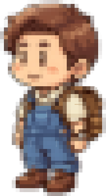
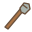
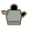
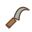
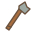
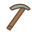
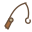
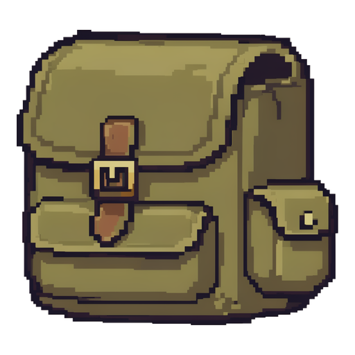
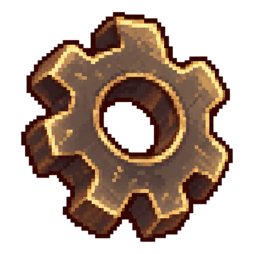

Suasana: Live · Open-Meteo
GTLAUNCHER
Buat world dari Base World dan pilih yang ingin ditampilkan.
Base World adalah contoh terkunci; buat world baru untuk mengubah objek. Gunakan ↑ dan ↓ untuk mengurutkan world buatan.
Editor tile dan terrain hanya tersedia di preview. Ekspor JSON world 20×20 atau 25×25 dapat diimpor pada Android versi terbaru. Data browser dan Android tersimpan terpisah.
WORLD AKTIF
Daftar ini menunjukkan objek yang sudah ada. Menyimpan objek ke katalog bersama dan menambahkan salinan belum tersedia.
Aset pagar sudah dibuat, tetapi belum bisa ditambahkan ke world.
Kaki karakter terkunci pada pusat tile. Pengaturan ini juga dapat digunakan tanpa gestur sentuh.